Costa Blanca · Dénia
Inmuebles en venta en Dénia
Pisos nuevos a un paseo de la playa, viviendas en primera línea con vistas al mar y adosados cerca del mar, bajo el castillo y el Montgó. Estos son los inmuebles que vendemos hoy en Dénia, con una breve guía de las zonas y lo que cuesta de verdad comprar.
- 12inmuebles en venta en Dénia
- desde 254.000 €un piso
- unos 75 minal aeropuerto de Valencia o Alicante
- ferrisa Ibiza y Mallorca
En venta ahora
Inmuebles en venta en Dénia
Pisos de 1 a 3 dormitorios cerca de la playa, algunos en primera línea con vistas al mar, además de adosados y una villa. Los precios son los de hoy; pregúntenos por la disponibilidad actual.
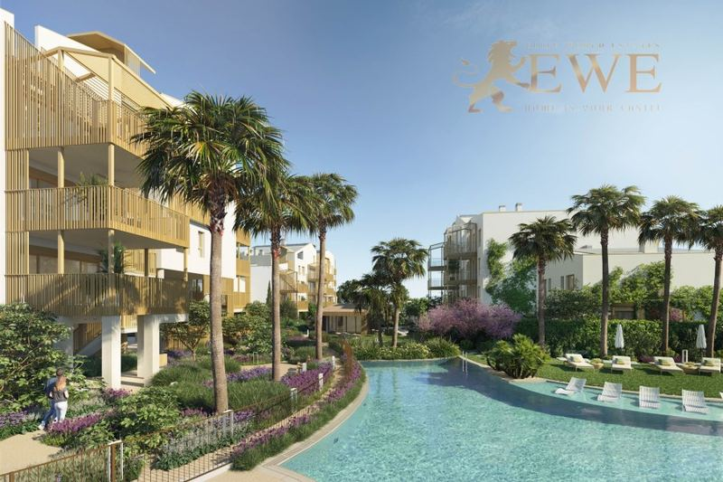
Dénia
A wonderful apartment in a luxurious housing estate close to the beach in Denia
254.000 €
1 dormitorio · 1 baño · 43 m²Ref. EWE2415
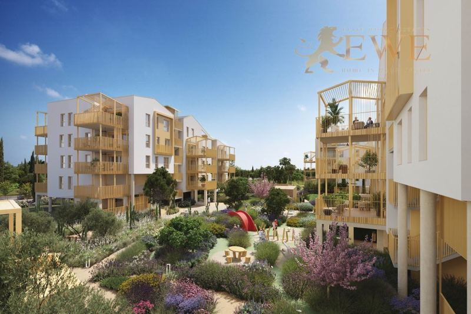
Entrega fin 2028Dénia
Exceptional apartment in a new development close to the beach in Denia
327.000 €
2 dormitorios · 2 baños · 56 m²Ref. EWE3875
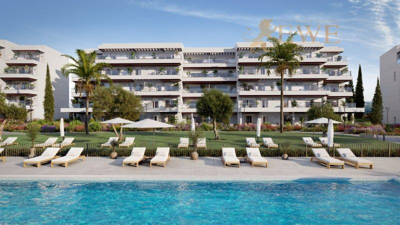
Dénia
New apartments 200 m from the beach in the picturesque town of Denia
333.000 €
2 dormitorios · 2 baños · 68 m²Ref. EWE3483
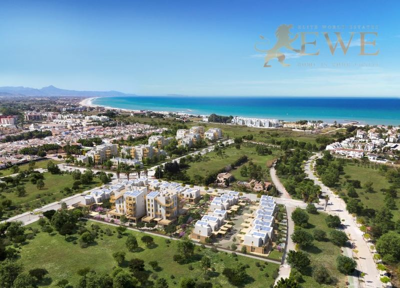
Dénia
Excellent townhouses just 400m from the sea in the picturesque town of Denia
370.000 €
2 dormitorios · 2 baños · 75 m²Ref. EWE3285
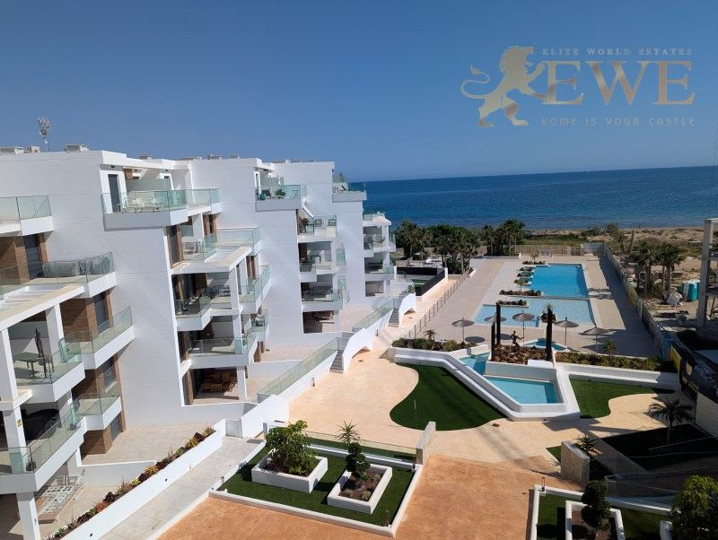
Dénia
A stunning apartment on the first coastline in Dénia
379.000 €
2 dormitorios · 2 baños · 62 m²Ref. EWE1723
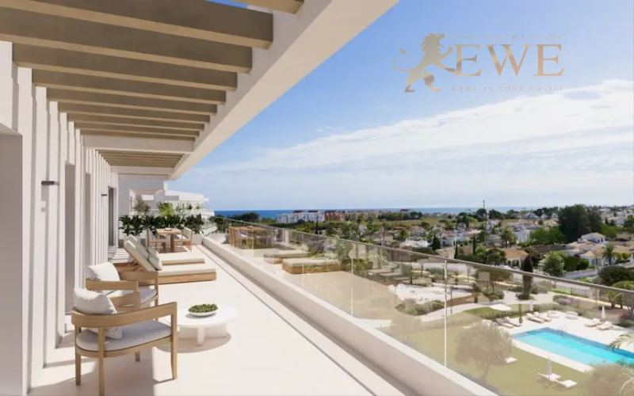
Dénia
New apartments 200 m from the beach in the picturesque town of Denia
395.000 €
3 dormitorios · 2 baños · 81 m²Ref. EWE3484
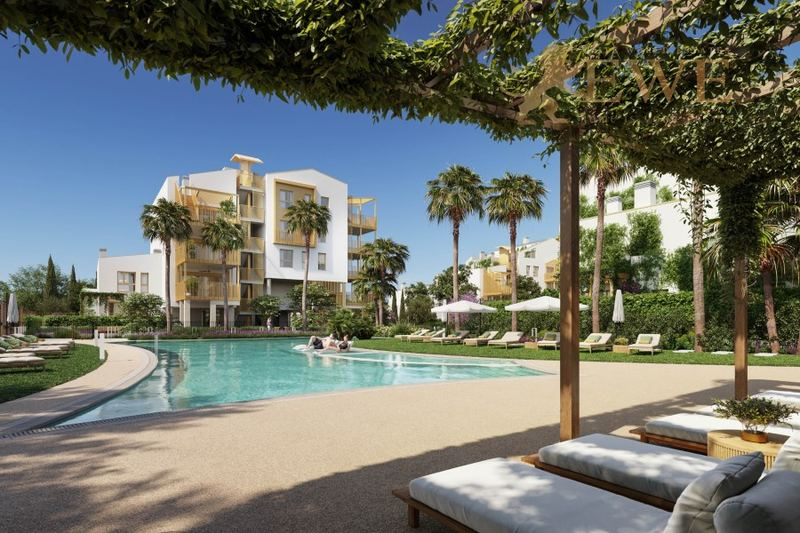
Dénia
Modern apartment just 400 m from the sea in Dénia
470.000 €
3 dormitorios · 2 baños · 82 m²Ref. EWE2414
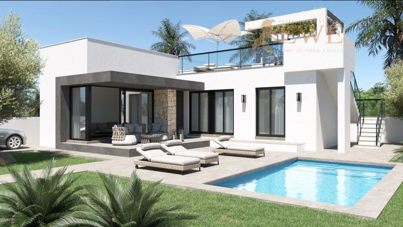
Dénia
Magnificent terraced house with large solarium in Els Poblets
475.000 €
3 dormitorios · 2 baños · 120 m²Ref. EWE3173
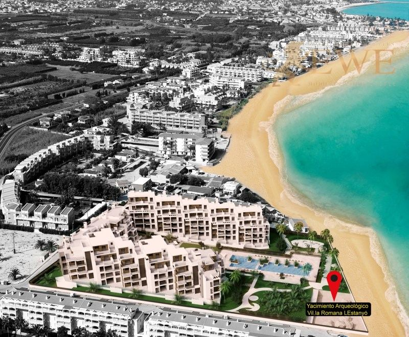
Dénia
Excellent sea view apartment on the first line of Dénia
499.000 €
2 dormitorios · 2 baños · 73.23 m²Ref. EWE1722
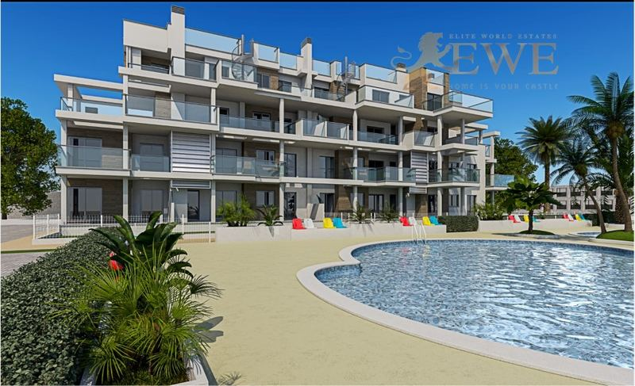
Dénia
Apartment close to the beach in Denia
499.000 €
3 dormitorios · 2 baños · 73 m²Ref. EWE3289
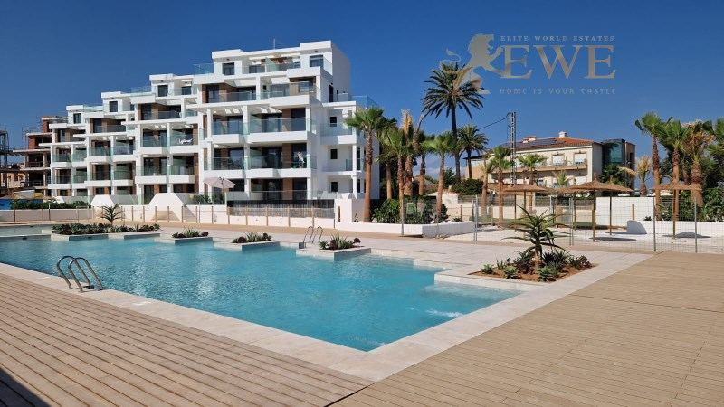
Dénia
Stunning penthouse on the first line of Dénia, Costa Blanca
625.000 €
3 dormitorios · 2 baños · 98 m²Ref. EWE1743
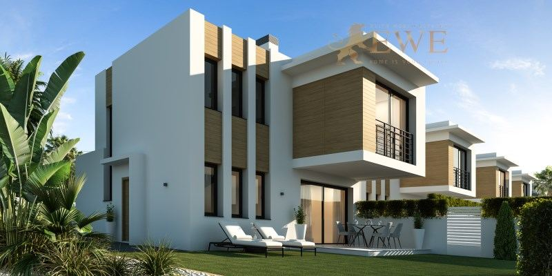
Dénia
Independent villa in the beautiful port city of Denia
675.000 €
3 dormitorios · 3 baños · 155 m²Ref. EWE1982
La ciudad
Vivir en Dénia
Dénia es una ciudad de unos 45.000 habitantes en el extremo norte de la Costa Blanca, a medio camino entre Valencia y Alicante. Su castillo se alza en una colina sobre el casco antiguo y el puerto, y detrás se levanta el Montgó.
Al norte del puerto, Les Marines tiene kilómetros de playas de arena, y al sur, Les Rotes tiene calas rocosas de agua clara. El puerto tiene puerto deportivo y ferris a Ibiza y Mallorca, y Dénia es famosa por su cocina, desde la gamba roja hasta los bares de tapas del casco antiguo.
La ciudad tiene vida todo el año, con tiendas, mercados, colegios y hospital. Los aeropuertos de Valencia y Alicante están a algo más de una hora en coche, y Jávea a unos 15 minutos.
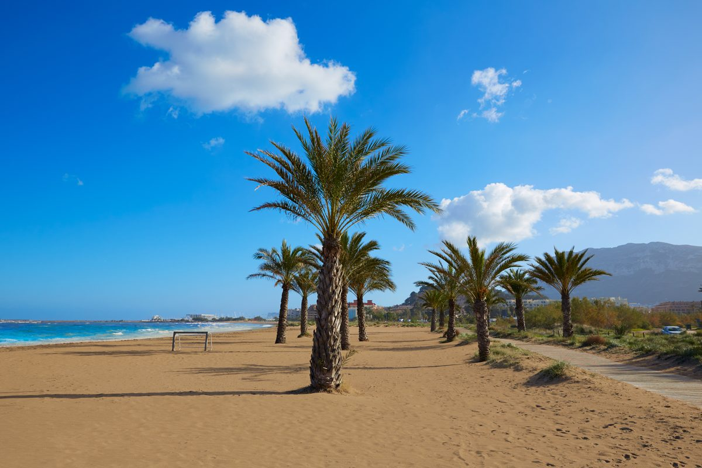
Dónde comprar
Las principales zonas de Dénia
Casco antiguo y puerto
Bajo el castillo, con el puerto deportivo, restaurantes y tiendas. Pisos para vivir todo el año.
Les Marines
Las largas playas de arena al norte del puerto. Pisos y casas cerca del mar, muchos en primera línea.
Les Rotes
La costa rocosa al sur del puerto, con calas y agua clara. Villas y pisos junto al mar.
Montgó
Las laderas de la montaña detrás de la ciudad, verdes y tranquilas. Villas con vistas al mar.
Els Poblets
El pequeño pueblo vecino al norte, cerca de las playas de arena. Adosados y pisos, a menudo por menos dinero.
Presupuesto
Cuánto cuesta comprar en Dénia
Al precio se suman impuestos y gastos. Para una vivienda nueva de 395.000 €, por ejemplo, son 39.500 € de IVA y 5.530 € de AJD, más notaría, registro y abogado. En la segunda mano los impuestos son otros, así que pídanos siempre la cifra exacta de la vivienda que le guste.
| Obra nueva | 10 % IVA + 1,4 % AJD |
|---|---|
| Segunda mano | 9 % ITP, 11 % por encima de 1 millón de € |
| Notaría, registro, abogado | aprox. 1,5–2,5 % del precio |
| Cada año | IBI y gastos de comunidad, según la vivienda |
Preguntas
Comprar vivienda en Dénia: preguntas y respuestas
¿Cuánto cuesta un piso en Dénia?
Nuestros pisos en Dénia empiezan hoy en 254.000 €, y la mayoría de 2 o 3 dormitorios cuestan entre 330.000 € y 500.000 €. Los pisos en primera línea con vistas al mar cuestan hasta unos 625.000 € por un ático.
Les Marines o Les Rotes: ¿cuál es mejor?
Les Marines tiene largas playas de arena, ideales para familias. Les Rotes tiene calas rocosas de agua muy clara, perfectas para nadar y bucear, y es más tranquila.
¿A qué distancia está Dénia del aeropuerto?
El aeropuerto de Valencia está a unos 100 km y el de Alicante-Elche a unos 95 km, en ambos casos algo más de una hora en coche.
¿Qué gastos hay además del precio?
En la Comunitat Valenciana se paga un 10 % de IVA y un 1,4 % de AJD en obra nueva, y un 9 % de ITP (11 % por encima de 1 millón de €) en segunda mano. Notaría, registro y abogado suman alrededor de un 1,5–2,5 %.
¿Pueden comprar vivienda los extranjeros en Dénia?
Sí. Cualquier persona puede comprar una vivienda en España. Necesita un NIE y normalmente una cuenta bancaria española, y le ayudamos con las dos cosas. Consulte nuestra guía del NIE.


¿Busca casa en Dénia?
Cuéntenos su presupuesto y lo que necesita. Respondemos en un día laborable, en español, inglés, alemán o polaco.